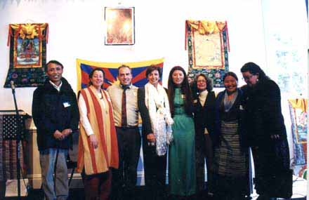

Contact Us

Ugyen Tsering,VP of TANC, Diane Hume, Giovanni Vassallo, Rep. Nancy Pelosi, Tashi Chodon, Barbara Green, Tsering Dolma Vassallo, BAFoT pres. emeritus at Tibet Day 2001
Contact Information:
Bay Area Friends of Tibet
1310 Fillmore Street, Suite 401
San Francisco, CA 94115
bafot@friends-of-tibet.org
Board Members:
President, Giovanni Vassallo Phone: 415-409-6353
Vice President, Diane Hume Phone: 415-626-7195
Secretary, Barbara Greene Phone: 510-845-9388
Tsering Dolma Vassallo Phone: 415-624-9929
Board Members: Benina Gould, Patricia Stengle
Cultural Coordinators:
Jamyong
Singye, and
Jamyang Lama
Advisors:
Jigme Raptentsetsang, former BAFoT President
Pema Chhinjor, former Security Minister of the Dalai Lama’s Tibetan Government-in-Exile
Thepo Tulku, BAFoT Founder and former President
Webmaster:Dave Spitzer